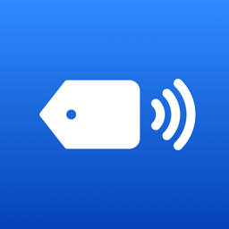

RFID Tag Toolkit
An iPhone app for evaluating UHF RFID inlays and labels with a Zebra RFD40 sled: how far each one reads on the product it goes on, and which one to choose.
- Measure range where it matters. Test a label on the product, at its spot and in the display it will have. Step away with a tape measure, or walk away while an Apple Watch or a second iPhone beside the tag measures the distance. The app takes short readings and works out how far the label reads reliably and how far it reads at all.
- Compare inlays. A matrix of every inlay across your setups, power sweeps on the bench, and PDF reports for your clients. Results from different sled models or link profiles are never mixed.
- Identify any label. Finds the one tag in front of the sled by its TID, even among blank labels that share a factory EPC, and names its chip.
- Encode tags. Unique test EPCs from the GS1 demonstration range, retail SGTIN-96 from a UPC scanned with the sled or the camera, hex or text.
- Inventory and locate. Every tag in range, and a search for one of them that ticks faster as you get closer.
Your data stays on your iPhone, and in your own iCloud when you sync. No account, no tracking.